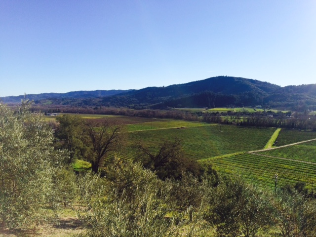
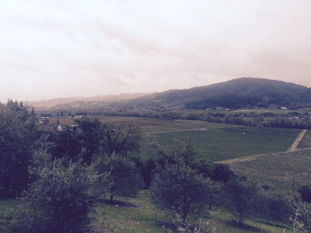
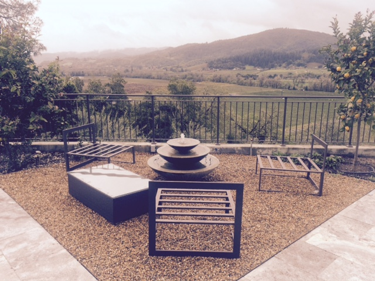

Check out the newest gem at the end of Dry Creek Valley by Healdsburg!! Trattore Farms is the home of Trattore Estate Wines and Dry Creek Olive Oil Company. This is a can't miss if you're in the area.
Only open since November I have taken guests there and they were blown away by the wines, setting, facility, olive oils and of course the views. They offer a regular tasting from 11-5 but you can also enjoy your tasting with a Simply Sonoma Charcuterie and Cheese Plate or Do an in-depth "Get Your Boots Dirty Vineyard, Orchard and Olive Mill Tour". Below are some of the views from out on their spacious deck.
For more info call 707-431-7200 or email info@TrattoreFarms.com
  